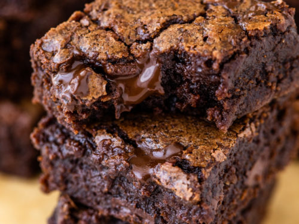

Homemade Brownies

About This Recipe
These **rich and fudgy brownies** are easy to make and perfect for chocolate lovers. With a crispy top and gooey center, they are the ultimate treat!
Ingredients
- 1/2 cup (1 stick) unsalted butter, melted
- 1 cup granulated sugar
- 2 large eggs
- 1 teaspoon vanilla extract
- 1/3 cup unsweetened cocoa powder
- 1/2 cup all-purpose flour
- 1/4 teaspoon salt
- 1/4 teaspoon baking powder
- 1/2 cup chocolate chips (optional)
Instructions
- Preheat oven to 350°F (175°C). Grease an 8x8-inch baking pan or line it with parchment paper.
- In a bowl, whisk together melted butter and sugar until smooth.
- Add eggs and vanilla extract, and whisk until fully combined.
- Sift in cocoa powder, flour, salt, and baking powder. Mix until just combined.
- Fold in chocolate chips, if using.
- Pour the batter into the prepared pan and spread evenly.
- Bake for 20-25 minutes, or until a toothpick inserted in the center comes out with a few moist crumbs.
- Let the brownies cool in the pan for 10 minutes before cutting into squares.
Serving Suggestions
Enjoy these brownies warm with a scoop of ice cream or a drizzle of chocolate sauce!